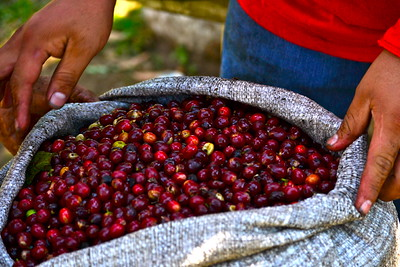
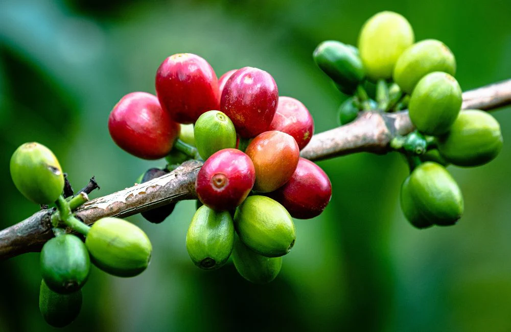
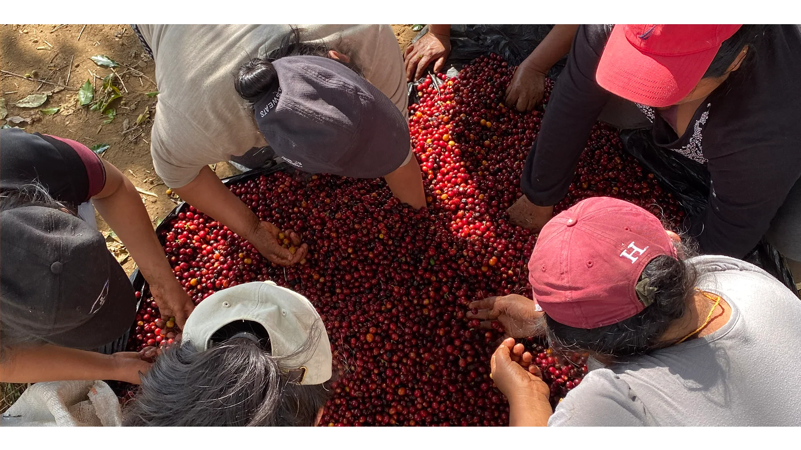

Etapa 01
Café Uva
El fruto en su máxima expresión. Las cerezas de café seleccionadas en su punto ideal de maduración, con un rojo intenso que indica la perfección del grano en su interior.
El Salvador · Café de Especialidad · Desde el campo
Tradición cafetalera, calidad y tecnología desde el campo hasta la comercialización
Nuestra Historia
"Una finca que honra la tradición del café salvadoreño mientras abraza la innovación tecnológica para crecer con integridad."
Finca El Magueyal representa una organización cafetalera comprometida con modernizar sus procesos sin perder la esencia del trabajo agrícola. Ubicada en tierras fértiles, nuestra finca combina décadas de conocimiento del cultivo del café con una visión empresarial orientada al crecimiento sostenible.
Creemos que la calidad del café comienza mucho antes de la taza. Nace en la selección de variedades, en el cuidado diario del cultivo, en el respeto por la tierra y en el trabajo dedicado de quienes hacen posible cada cosecha.
Nuestros Productos
Cada etapa de transformación del café tiene su propia identidad, su propio carácter y su propia historia.

Etapa 01
El fruto en su máxima expresión. Las cerezas de café seleccionadas en su punto ideal de maduración, con un rojo intenso que indica la perfección del grano en su interior.

Etapa 02
El grano sin tostar, listo para su comercialización o tostado artesanal. Conserva todos los perfiles de sabor del origen, resultado de un proceso de beneficio cuidadoso.
Etapa 03
El grano pelado y pulido, listo para el tostado final. Nuestra presentación estrella para exportación, con los más altos estándares de clasificación y calidad.

Compromiso
Desde el registro de cada lote hasta la entrega final, cada kilogramo de café está documentado y trazado con nuestro sistema ERP para garantizar transparencia total.
El Camino del Café
Un proceso cuidadoso, documentado y trazable en cada etapa.
Selección de variedades, manejo del cafetal, fertilización y cuidado permanente del suelo para garantizar la mejor calidad en cada ciclo productivo.
Recolección selectiva de las cerezas en su punto óptimo de maduración. Corte manual que garantiza la selección del fruto perfecto.
Análisis sensorial, clasificación por densidad y tamaño, y registro en el sistema ERP para asegurar estándares consistentes lote a lote.
Despulpado, fermentación, lavado y secado del café bajo protocolos rigurosos que preservan el perfil de taza y las características del origen.
Empaque, documentación de exportación y entrega al cliente final con trazabilidad completa desde el lote de origen hasta el destino final.
Sistema ERP · Odoo
El sistema busca centralizar la información operativa, financiera y logística de la finca para mejorar la trazabilidad desde el trabajo de campo hasta la venta del café. Una plataforma única para toda la operación.
Gestión de personal, jornales agrícolas, control de asistencia, planillas y documentación de trabajadores del campo y la administración.
Control de lotes de café en todas sus etapas, insumos agrícolas, maquinaria y activos de la finca con trazabilidad completa por movimiento.
Planificación de mantenimiento preventivo de maquinaria del beneficio, equipos agrícolas y vehículos, con historial de intervenciones y costos.
Gestión de proveedores, órdenes de compra, recepción de insumos agrícolas y productos del beneficio, con control de presupuesto y aprobaciones.
Registro de clientes, cotizaciones, órdenes de venta y seguimiento de contratos de exportación con trazabilidad directa al lote de origen.
Control financiero integral, emisión de facturas, gestión de cobros y pagos, reportes contables y cumplimiento tributario con registros auditables.
Impacto Operativo
La tecnología no reemplaza el trabajo del campo — lo potencia. Con un sistema integrado, cada decisión está respaldada por datos reales, actualizados y confiables.
Visibilidad en tiempo real de todas las áreas de la finca: campo, beneficio, almacén y administración, desde un único sistema.
Seguimiento completo del café desde el lote de cosecha hasta la factura de venta, garantizando transparencia total para clientes y compradores.
Optimización del uso de insumos, mano de obra y maquinaria mediante datos históricos y proyecciones basadas en rendimientos reales.
Costos por lote, análisis de rentabilidad, control presupuestal y reportes financieros actualizados para la toma de decisiones estratégicas.
Eliminación de tareas manuales redundantes, reducción de errores y automatización de flujos de trabajo en toda la operación cafetalera.
Proyecto Tecnológico
La solución tecnológica de Finca El Magueyal está basada en Odoo Community, una plataforma ERP de código abierto adaptada a las necesidades específicas de la producción cafetalera.
La implementación cubre desde el registro de actividades de campo, control de jornales y manejo de inventarios, hasta la gestión de ventas, facturación y análisis financiero, todo conectado en un ecosistema digital centralizado.
Sin costos de licencia. Adaptable a las necesidades específicas de la finca.
Todos los módulos conectados en tiempo real, eliminando silos de información.
Dashboards operativos y financieros actualizados al momento para mejor toma de decisiones.
Consultar y registrar información desde cualquier lugar, incluso desde el campo.
Conectemos
¿Interesado en nuestro café o en el proyecto tecnológico? Escríbenos.